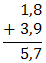
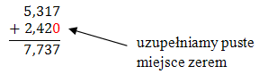
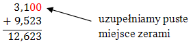
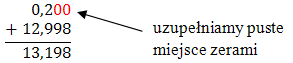
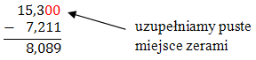

Proste działania na ułamkach dziesiętnych można wykonywać w głowie. Wystarczy dodać
oddzielnie części całkowite i oddzielnie części ułamkowe.
- \(0{,}1 + 0{,}3 = 0{,}4\)
- \(1{,}4 + 2{,}5 = 3{,}9\)
- \(11{,}7 - 0{,}3 = 11{,}4\)
- \(6{,}9 - 3{,}5 = 3{,}4\)
Bardziej skomplikowane działania można wykonać pisemnie.
W tym celu
zapisujemy dwa ułamki w słupku w taki sposób, aby przecinek jednego ułamka znalazł się pod
przecinkiem drugiego ułamka. Jeżeli ułamki mają różną liczbę cyfr po przecinku, to do "krótszego"
ułamka dopisujemy tyle zer, żeby części ułamkowe były równej długości.
W wyniku końcowym
przecinek przepisujemy w tym samym miejscu, w którym występował w liczbach dodawanych.
- \(1{,}8 + 3{,}9 = 5{,}7\)
Teraz to samo działanie
wykonamy w sposób pisemny:

- \(5{,}317 + 2{,}42 = 7{,}737\)
Teraz dodamy te dwa ułamki
w sposób pisemny:

- \(3{,}1 + 9{,}523 = 12{,}623\)
Teraz dodamy te dwa ułamki
w sposób pisemny:

- \(0{,}2 + 12{,}998 = 13{,}198\)
Teraz dodamy te dwa
ułamki w sposób pisemny:

- \(15{,}3 - 7{,}211 = 8{,}089\)
Teraz odejmiemy te dwa
ułamki w sposób pisemny:
